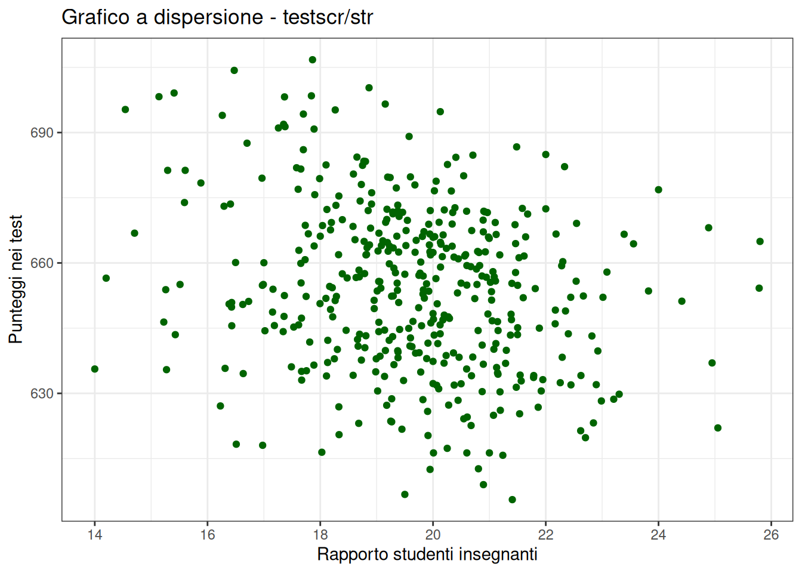
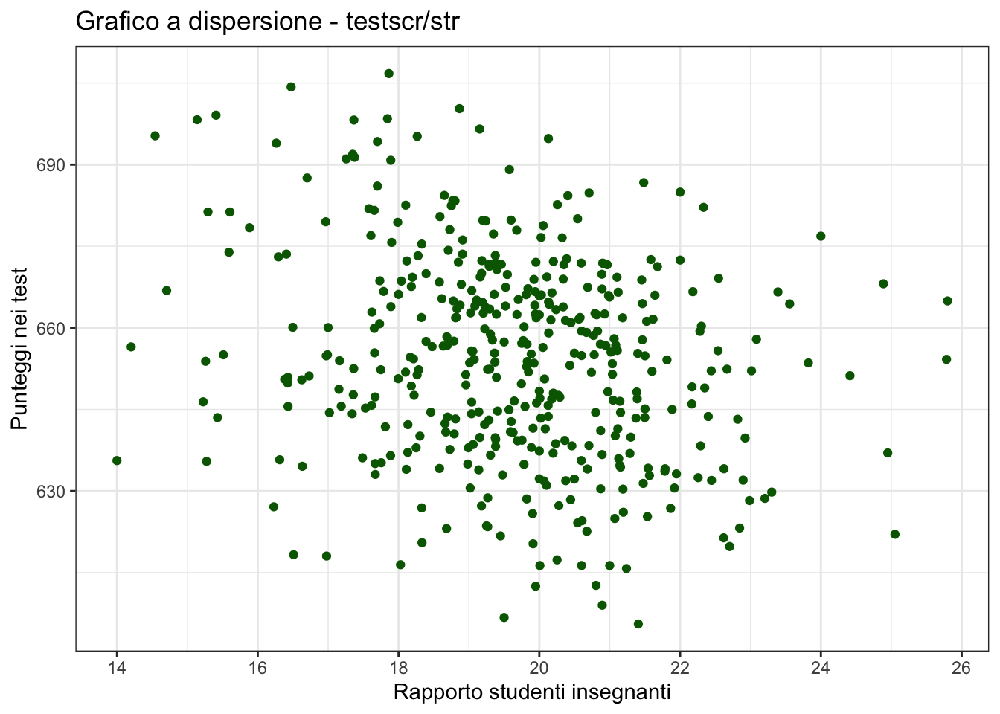
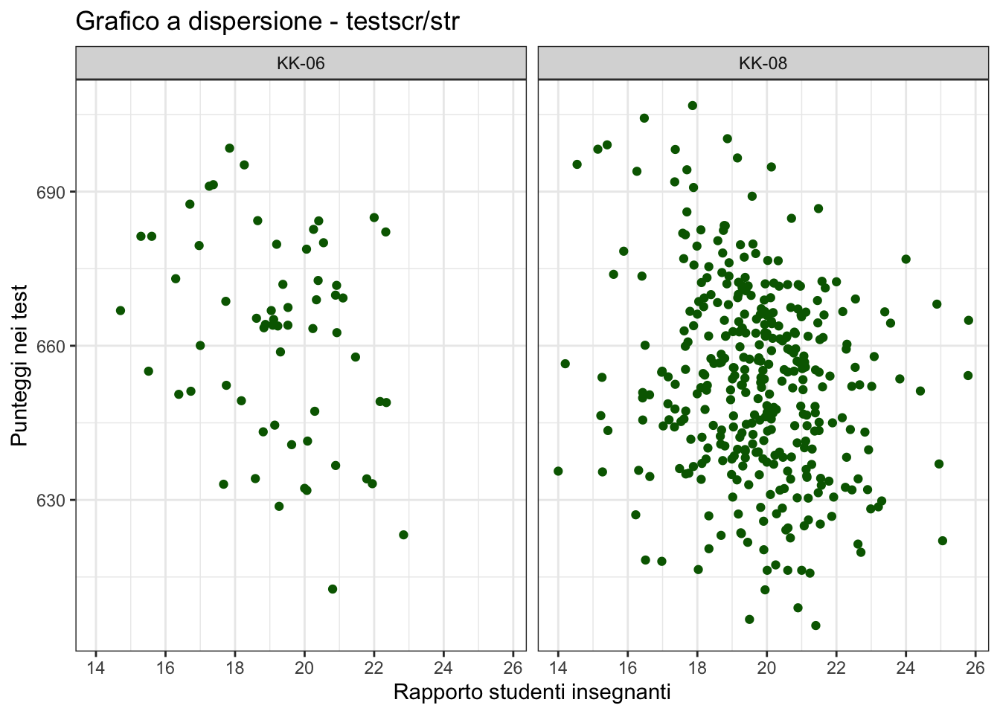
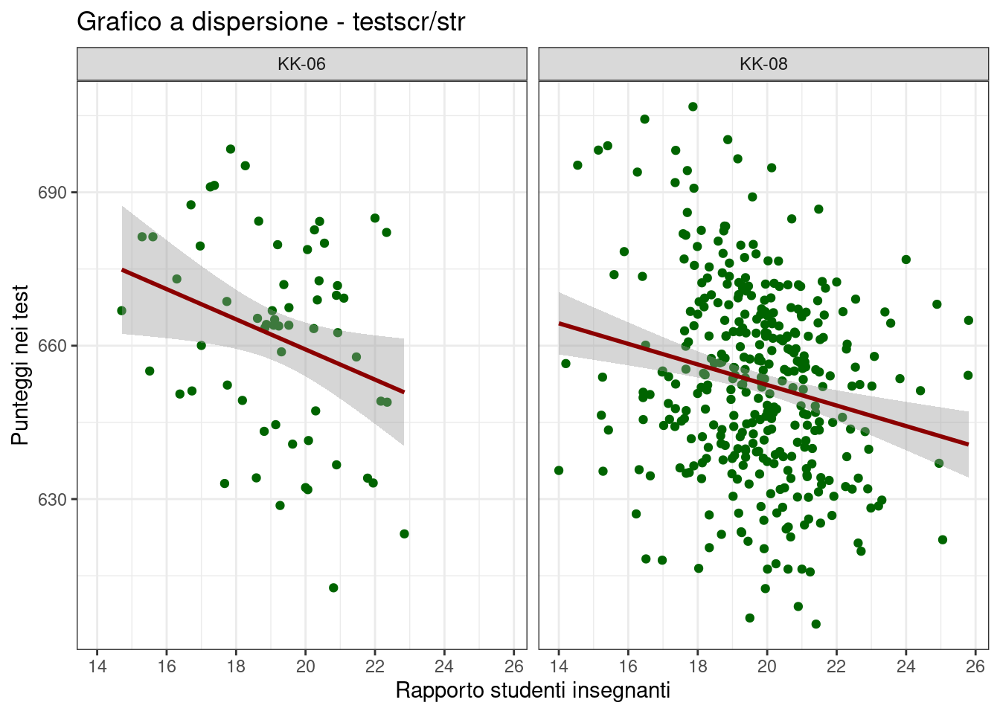
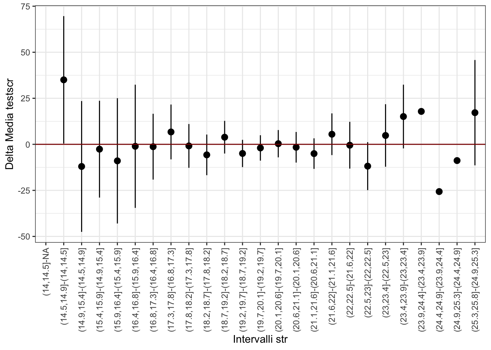

install.packages("ggplot2")R: Introduzione
Storia
R è un linguaggio di programmazione open source utilizzato per l’analisi e visualizzazione dei dati.
R è la versione open source di S, software sviluppato da John Chambers e colleghi presso i Bell Laboratories di AT&T alla fine degli anni ’70. Nell’idea del suo creatore S doveva essere un linguaggio di programmazione per l’analisi dei dati che fosse più semplice e più interattivo rispetto ai linguaggi esistenti dell’epoca, come FORTRAN e SAS.
R fu sviluppato inizialmente da Ross Ihaka e Robert Gentleman presso l’Università di Auckland, in Nuova Zelanda. La prima versione di R venne condivisa dai sui creatori nel 1993. Nel 1995 il software fu rilasciato sotto la licenza open source GNU GPL.
La versione 1.0 è stata rilasciata il 29 febbraio 2000 e da quel momento la crescita in popolarità non si è mai arrestata.
Negli ultimi dieci anni, due aziende hanno contribuito alla crescita di R: R Studio (oggi diventata Posit) e Revolution Analytics.
Revolution Analytics fondata nel 2007, è stata una delle prime società ad offrire una versione commerciale di R. Revolution Analytics ha introdotto nuove funzionalità, come l’elaborazione parallela e distribuita, che hanno permesso di elaborare grandi quantità di dati in modo più efficiente.
L’acquisizione di Revolution Analytics da parte di Microsoft nel 2015 ha ulteriormente rafforzato l’adozione di R, poiché Microsoft ha iniziato ad integrare R in molti dei suoi prodotti, come SQL Server e Power BI.
RStudio è stata fondata nel 2011 da JJ Allaire ed ha cambiato nome in Posit nel 2022. RStudio ha creato un ambiente di sviluppo integrato (IDE) per R, chiamato appunto RSudio, che semplifica lo sviluppo di codice R, la gestione dei pacchetti e la creazione di grafici. RSudio è diventato uno strumento fondamentale per molti utenti R, poiché semplifica notevolmente il processo di sviluppo e di debugging.
RStudio ha inoltre creato e mantiene pacchetti importanti come ggplot2() e dplyr(), che hanno migliorato notevolmente la capacità di R per la visualizzazione dei dati e la manipolazione dei dati.
R è oggi uno dei linguaggi di programmazione più popolari per l’analisi dei dati e la statistica negli ultimi anni. Ecco alcuni dati sull’adozione di R:
Numero di utenti: Secondo un sondaggio del 2022 condotto da Stack Overflow R è uno dei linguaggi di programmazione più popolare al mondo, utilizzato dal 4.7% degli sviluppatori. Nella lista è il primo software ad essere specificatamente pensato per applicazioni statistiche.
Numero di pacchetti: Il Comprehensive R Archive Network (CRAN), il principale repository di pacchetti per R, contiene oltre 19.000 pacchetti. Questi pacchetti coprono una vasta gamma di applicazioni che vanno dalla statistica al machine learning, dalla visualizzazione e manipolazione dei dati alla stesura automatica di report, e altri task generici e non necessariamente legati alle applicazioni di carattere statistico.
Popolarità dei pacchetti:
ggplot2(per la visualizzazione dei dati) edplyr(per la manipolazione dei dati) sono fra i pacchetti più popolari.Uso aziendale: L’adozione di R nell’ambiente aziendale è aumentata negli ultimi anni, con molte aziende che lo utilizzano per l’analisi dei dati e la statistica.
In generale, R è diventato un linguaggio di programmazione popolare tra i data scientist, gli statistici e gli analisti dei dati grazie alla sua vasta gamma di pacchetti, alla sua flessibilità e alla sua potenza nell’analisi dei dati.
Installazione di R e Rstudio
Per iniziare ad utilizzare R, è necessario installare il software. R può essere scaricato gratuitamente dal sito ufficiale (www.r-project.org/) scegliendo la versione adatta al sistema operativo utilizzato.
Per installare RStudio sul tuo computer basta visitare https://posit.co/download/rstudio-desktop/, scaricare la versione di RStudio Desktop compatibile con il sistema operativo e seguire le istruzioni per completare l’installazione.
Installazione di pacchetti
Per utilizzare pacchetti aggiuntivi come ggplot2 e dplyr, è necessario installarli utilizzando il comando install.packages() seguito dal nome del pacchetto da installare.
Ad esempio, per installare il pacchetto ggplot2, bisogna digitare il seguente comando nella console R:
Per installare dplyr bisogna usare il seguente comando:
install.packages("ggplot2")Un pacchetto particolarmente utile poiché contiene parecchi dataset di carattere economico, è Ecdat. Può essere installato mediante il seguente comando:
install.packages("Ecdat")Alternativamente, i pacchetti possono essere installati direttamente da RStudio usando il menu Tools (Strumenti).
Caricamento pacchetti
L’installazione rende disponibili i pacchetti sul proprio computer. Perché R possa utilizzare le funzionalità del pacchetto è necessario caricare i pacchetti utilizzando il comando library(). Ad esempio, per caricare il pacchetto Ecdat bisogna eseguire il seguente comando nella console R:
library(Ecdat)I dataset di Ecdat
Per avere un’idea dei dataset messi a disposizione da Ecdat possiamo utilizzare la funzione di help
help(package="Ecdat")
Note
Il sistema di help di R è un’importante risorsa per gli utenti che utilizzano questo software. Consente di accedere a informazioni dettagliate su tutte le funzioni e i pacchetti di R, nonché di comprendere meglio il funzionamento del linguaggio di programmazione R.
Ogni funzione in R ha la sua pagina di help, alla quale si può accedere tramite la funzione help() o tramite il simbolo ? seguito dal nome della funzione. Per esempio
help(mean)apre la pagina di help relativa alla funzione mean.
La pagina di help fornisce una descrizione della funzione, i suoi argomenti e tipologia dei valori che la funzione restituisce. Inoltre, la maggior parte delle funzioni in R hanno esempi di utilizzo nella loro pagina di help.
Per ottenere aiuto su un pacchetto e sulle sue funzionalità bisgna passare l’argomento packages seguito dal nome del pacchetto. Per esempio, il seguente comando mostra la pagina di help per il pacchetto ggplot2
help(packages="ggplot2")I dataset possono essere caricati nella sessione di R mediante il comando data(). Per esempio, il seguente comando
data(Caschool)rende disponibile il dataset Caschool. Il data set può essere richiamato semplicemente digitando il suo nome
summary(Caschool) distcod county district grspan
Min. :61382 Sonoma : 29 Lakeside Union Elementary: 3 KK-06: 61
1st Qu.:64308 Kern : 27 Mountain View Elementary : 3 KK-08:359
Median :67760 Los Angeles: 27 Jefferson Elementary : 2
Mean :67473 Tulare : 24 Liberty Elementary : 2
3rd Qu.:70419 San Diego : 21 Ocean View Elementary : 2
Max. :75440 Santa Clara: 20 Pacific Union Elementary : 2
(Other) :272 (Other) :406
enrltot teachers calwpct mealpct
Min. : 81.0 Min. : 4.85 Min. : 0.000 Min. : 0.00
1st Qu.: 379.0 1st Qu.: 19.66 1st Qu.: 4.395 1st Qu.: 23.28
Median : 950.5 Median : 48.56 Median :10.520 Median : 41.75
Mean : 2628.8 Mean : 129.07 Mean :13.246 Mean : 44.71
3rd Qu.: 3008.0 3rd Qu.: 146.35 3rd Qu.:18.981 3rd Qu.: 66.86
Max. :27176.0 Max. :1429.00 Max. :78.994 Max. :100.00
computer testscr compstu expnstu
Min. : 0.0 Min. :605.5 Min. :0.00000 Min. :3926
1st Qu.: 46.0 1st Qu.:640.0 1st Qu.:0.09377 1st Qu.:4906
Median : 117.5 Median :654.5 Median :0.12546 Median :5215
Mean : 303.4 Mean :654.2 Mean :0.13593 Mean :5312
3rd Qu.: 375.2 3rd Qu.:666.7 3rd Qu.:0.16447 3rd Qu.:5601
Max. :3324.0 Max. :706.8 Max. :0.42083 Max. :7712
str avginc elpct readscr
Min. :14.00 Min. : 5.335 Min. : 0.000 Min. :604.5
1st Qu.:18.58 1st Qu.:10.639 1st Qu.: 1.941 1st Qu.:640.4
Median :19.72 Median :13.728 Median : 8.778 Median :655.8
Mean :19.64 Mean :15.317 Mean :15.768 Mean :655.0
3rd Qu.:20.87 3rd Qu.:17.629 3rd Qu.:22.970 3rd Qu.:668.7
Max. :25.80 Max. :55.328 Max. :85.540 Max. :704.0
mathscr
Min. :605.4
1st Qu.:639.4
Median :652.5
Mean :653.3
3rd Qu.:665.9
Max. :709.5
Primi grafici con ggplot2
I passi per ottenere un grafico con ggplot2 sono:
Installare e caricare il pacchetto
ggplot2utilizzando il comandoinstall.packages("ggplot2")seguito dalibrary(ggplot2).Caricare i dati che si desidera visualizzare in un data frame.
Creare un oggetto
ggplotutilizzando la funzioneggplot(). Gli argomenti di questa funzione sono ildata.framee la funzioneaesmediante la quale possono essere specificate le variabili che si desidera utilizzare per l’asse x e l’asse y.Aggiungere i livelli e gli stili al grafico utilizzando una serie di geometrie come
geom_point(),geom_line(),geom_bar(). Queste funzioni definiscono le modalità di rappresentazione dei dati nel grafico (ad esempio, con punti, linee, barre, ecc.).Aggiungere etichette, titoli e altre personalizzazioni utilizzando funzioni come
labs(),xlab(),ylab(),ggtitle()e altre funzioni di personalizzazione.
Ecco un esempio di codice di base per creare un grafico a dispersione utilizzando ggplot2:
library(ggplot2)
# Caricare i dati
data(Caschool)
# Creare l'oggetto ggplot
scatterplot <- ggplot(Caschool, aes(x = str, y = testscr))
# Aggiungere i punti al grafico
scatterplot <- scatterplot + geom_point(col = "darkgreen")
# Aggiungere etichette e titoli
scatterplot <- scatterplot +
labs(title = "Grafico a dispersione - testscr/str",
x = "Rapporto studenti insegnanti", y = "Punteggi nei test")
# Visualizzare il grafico
scatterplot
Questo è solo un esempio molto semplice, ma ggplot2 offre molte altre funzionalità per la creazione di grafici avanzati e personalizzati. Per esempio, possiamo cambiare il tema grafico usando theme_bw() che elimina i colori
scatterplot <- scatterplot + theme_bw()
scatterplot
Possiamo anche costruire grafici raggruppati per variabile. Per ottenere un grafico a dispersione per str e testscr per le due tipologie di scuole grspan=="KK-06" egrspan=“KK-08”`:
scatterplot <- scatterplot + facet_wrap(~grspan)
scatterplot
Note
La funzione facet_wrap() in ggplot2 è utilizzata per dividere i dati in sottoinsiemi basati su una variabile e creare una griglia di grafici separati, ognuno dei quali visualizza i dati per uno dei livelli della variabile.
La sintassi di base di facet_wrap() è la seguente:
facet_wrap(~variable, nrow = x, ncol = y)Dove variable è la variabile che si vuole utilizzare per suddividere i dati in sottoinsiemi (nell precedente esempio abbiamo utilizzato `),nrowencol` specificano il numero di righe e colonne della griglia di grafici che si desidera creare.
Possiamo anche aggiungere le rette di regression a ciascun grafico usando la geometria geom_smooth
scatterplot + geom_smooth(method="lm", col = "darkred")`geom_smooth()` using formula = 'y ~ x'
Prime manipolazione di dati usando dplyr
library(dplyr)
Attaching package: 'dplyr'The following objects are masked from 'package:stats':
filter, lagThe following objects are masked from 'package:base':
intersect, setdiff, setequal, unionCalcoliamo la media e la standard deviation di testscr
Caschool |>
summarize(m = mean(testscr), s = sd(testscr)) m s
1 654.1565 19.05335Possiamo anche calcolare la media, la standard deviation e il numero di osservazioni per il gruppo di scuole che hanno un rapporto studenti insegnanti minore di 20, \(str<20\) e il gruppo di scuole che hanno un rapporto maggiore o uguale a venti (\(str>20\)) usando la funzione group_by seguita dall’indicazione del gruppo (nel nostro caso str<20):
df_1 <- Caschool |>
group_by(str<20) |>
summarize(m = mean(testscr),
s = sd(testscr),
n = n())Il risultato delle manipolazioni è un tibble — un sorta di data.frame più flessibile definito nel pacchetto dplyr.
df_1 può essere a sua volta utilizzato per altri calcoli e si comporta in tutto e per tutto come un normale data.frame.
df_1# A tibble: 2 × 4
`str < 20` m s n
<lgl> <dbl> <dbl> <int>
1 FALSE 650. 17.9 182
2 TRUE 657. 19.4 238
Note
Le maggiori differenze fra i tibble e i data.frame sono:
Tipo di output: Il metodo di visualizzazione di un tibble è più compatto e leggibile rispetto a quello di un data.frame.
Comportamento dei nomi delle variabili: in un
tibble, i nomi delle variabili sono sempre conservati e non vengono mai modificati (ad esempio, i nomi delle variabili non vengono convertiti in stringhe). In undata.frame, i nomi delle variabili possono essere modificati o convertiti in stringhe.Comportamento di default dei dati mancanti: in un
tibble, i dati mancanti vengono visualizzati in modo più chiaro rispetto a undata.frame.Comportamento della subsetting: in un
tibble, il subsetting (o l’estrazione di sottoinsiemi di dati) è più rigoroso rispetto a undata.frame, in quanto conserva sempre la classe deltibble, anche se viene restituito un singolo valore.Funzioni dplyr: un
tibbleè progettato per essere compatibile con le funzioni del pacchetto dplyr, che sono utilizzate per manipolare i dati.
I tibble sono una versione leggermente migliorata dei tradizionali data.frame, progettata per semplificare l’analisi dei dati in R. Tuttavia, i data.frame sono ancora molto utilizzati e sono l’oggetto dati di base per molti pacchetti in R. Fortunatamente, molti dei comandi di R disegnati per i data.frame funzionano anche per i tibble.
Abbiamo visto che una stima della differenza dei valori attesi fra i due gruppi \[
\Delta = E(testscr|str<20) - E(testscr|str\geqslant20)
\] può essere ottenuta calcolando la differenza delle medie campionarie dei due gruppi e può essere ottenuta usando le informazioni in df_1:
## Differenza delle medie campionarie
df_1$m[2]-df_1$m[1][1] 7.37241e, quindi, \[ \hat{\Delta} = \overline{testscr}_{str<20} - \overline{testscr}_{str\geqslant20} = 7.3724101. \]
Con le stesse informazioni è possibile calcolare l’intervallo di confidenza al 95% per \(\Delta\) che è dato da \[
\hat{\Delta}\pm1.96\times\sqrt{\frac{s_{str<20}^{2}}{n_{str<20}}+\frac{s_{str\geqslant20}^{2}}{n_{str\geqslant20}}}.
\] Usando le informazioni contenute in df_1 otteniamo: \[
(3.7979806, 10.9468397)
\]
Qualcosa di più complicato
Invece di stimare la variazione del valore atteso rispetto alle due macro-categorie (\(str<20\) e \(str\geqslant20\)) possiamo provare a stimare il valore atteso condizionatamente a piccoli intervalli. Per esempio, possiamo voler stimare la seguente differenza \[ E(testscr|20.1 < str \leqslant 20.6) - E(testscr|20.6 < str \leqslant 21.1) \] oppure \[ E(testscr|21.6 < str \leqslant 22) - E(testscr|22 < str \leqslant 22.5). \]
Per stimare queste quantità utilizzando i dati nel campion, è necessario calcolare la media campionaria per le scuole che hanno un \(str\) che appartiene a ciascun intervallo. Per costruire questi intervalli, possiamo utilizzare la funzione cut(). La funzione cut() è utilizzata per suddividere un vettore numerico in più intervalli.
Note
La sintassi della funzione cut() è la seguente:
cut(x, breaks,
labels = NULL,
include.lowest = FALSE,
right = TRUE,
dig.lab = 3, ...)dove:
xè il vettore numerico da suddividere in binbreaksè un vettore contenente i valori di taglio, ovvero i punti di separazione tra i bin. Questo può essere specificato in diversi modi, ad esempio tramite un numero intero che specifica il numero di bin desiderati o un vettore numerico che specifica i limiti di ogni bin.labelsè un vettore di etichette per ogni bin. Se non specificato, gli intervalli saranno etichettati in base ai loro limiti.include.lowestindica se includere o meno il valore più basso del vettore x nel primo bin. Il valore predefinito è FALSE.rightindica se i bin devono essere chiusi a destra o a sinistra. Il valore predefinito è TRUE, ovvero i bin sono chiusi a destra.dig.labè il numero di cifre decimali da utilizzare per le etichette, se specificato....sono altri argomenti opzionali.
Ecco un esempio di utilizzo della funzione cut() per suddividere str in tre bin di uguale ampiezza:
str_cat3 <- cut(Caschool$str, 3)
summary(str_cat3) (14,17.9] (17.9,21.9] (21.9,25.8]
73 305 42 In questo caso il comando summary produce una tavola di frequenza con il numero delle scuole in ciascuna delle tre categorie (14,17.9], (17.9,21.9], (21.9,25.8].
Possiamo anche specificare i breaks in modo esplicito
str_cat3 <- cut(Caschool$str, c(13,20, 21, 26))
summary(str_cat3)(13,20] (20,21] (21,26]
243 86 91 In questo ultimo caso, gli intervalli sono (13,20], (20,21], (21,26].
Note
str_cat3 e, in generale, l’output di cut è un oggetto di classe factor. Questo tipo di variabili sono utilizzate per rappresentare variabili categoriche o qualitative, ovvero variabili che possono assumere un numero limitato di categorie o livelli (come il numero di intervalli nel nostro questo caso). La funzione summary() restituisce una tavola di frequenza per questo tipo di variabili perchè non avrebbe senso calcolare media, mediana e le altre quantità che sono solitamente restituita da summary quando l’argomento è una variabile di tipo numeric.
library(knitr)
df_2 <- Caschool |>
1 mutate(str_cat = cut(str, 25)) |>
2 group_by(str_cat) |>
3 summarize(m = mean(testscr), s = sd(testscr), n = n())
4df_2 |> kable()- 1
-
la funzione
cutper dividerestrin25intervalli; - 2
-
group_bysuddivideCaschoolin gruppi specificati dastr_cat - 3
-
summarizecalcola la media, la standard deviation e il numero di osservazioni per ciascun gruppo - 4
-
kabblerestituisce la tavole dei valori
| str_cat | m | s | n |
|---|---|---|---|
| (14,14.5] | 646.0500 | 14.778549 | 2 |
| (14.5,14.9] | 681.0750 | 20.117197 | 2 |
| (14.9,15.4] | 669.0583 | 27.490814 | 6 |
| (15.4,15.9] | 666.4300 | 16.397313 | 5 |
| (15.9,16.4] | 657.4625 | 31.451677 | 4 |
| (16.4,16.8] | 656.4000 | 22.941905 | 12 |
| (16.8,17.3] | 655.1200 | 19.810342 | 10 |
| (17.3,17.8] | 661.8417 | 21.060798 | 24 |
| (17.8,18.2] | 660.9820 | 21.377905 | 25 |
| (18.2,18.7] | 655.2611 | 19.005516 | 27 |
| (18.7,19.2] | 659.1279 | 17.430926 | 43 |
| (19.2,19.7] | 654.1674 | 18.195814 | 46 |
| (19.7,20.1] | 652.2074 | 16.740564 | 54 |
| (20.1,20.6] | 652.5538 | 18.840601 | 39 |
| (20.6,21.1] | 650.9581 | 18.103751 | 37 |
| (21.1,21.6] | 645.9219 | 17.020841 | 32 |
| (21.6,22] | 651.4000 | 19.099852 | 15 |
| (22,22.5] | 650.9208 | 14.543992 | 12 |
| (22.5,23] | 639.0750 | 16.285659 | 10 |
| (23,23.4] | 643.8833 | 17.057669 | 6 |
| (23.4,23.9] | 658.9750 | 7.672091 | 2 |
| (23.9,24.4] | 676.8500 | NA | 1 |
| (24.4,24.9] | 651.2000 | NA | 1 |
| (24.9,25.3] | 642.3833 | 23.492216 | 3 |
| (25.3,25.8] | 659.5750 | 7.601398 | 2 |
Alcuni degli errori standard sono uguali a NA perché in almeno uno dei gruppi il numero di osservazioni è inferiore a 2, il numero minimo per poter calcolare una misura dispersione.
Manipolando df_2, possiamo calcolare le differenze nelle media campionarie fra due intervalli adiacenti.
1df_3 <- df_2 |> mutate(Delta_str = paste0(str_cat, "-", lag(str_cat)),
2 Delta_testscr = m - lag(m),
3 stderr = sqrt(s^2/n + lag(s^2/n))) |>
4 select(Delta_str, Delta_testscr, stderr)
5kable(df_3)- 1
-
la variabile
Delta_strè uguale alla differenza dei due intervalli ottenuta incollandopaste0l’intervallo di ciascuna riga con quella precedente (la funzionelag(m)associa il valore dimdella riga precedente). Questa variabile è utile per annotare l’asse delle ascisse del grafico che produrremo prodotto in seguito. - 2
-
Delta_strcontiene la differenze delle medie campionari di due intervalli successivi. Queste differenze sono calcolate usandom - lag(m)e quindiDelta_testscrè uguale am, la media per l’intervallo, meno il valore della media per l’intervallo che preceda la riga in considerazione (lag(m)) - 3
-
stderrè l’errore standard della differenza delle medie in ciascun intervallo che è uguale a - 4
-
selezioniamo le variabili che ci servono per il grafico mediante la funzione
select() - 5
-
kable(df_3)formatta ildata.framecome una tavolohtml. La funzionekableè contenuta nel pacchettoknitr.
| Delta_str | Delta_testscr | stderr |
|---|---|---|
| (14,14.5]-NA | NA | NA |
| (14.5,14.9]-(14,14.5] | 35.0249939 | 17.650880 |
| (14.9,15.4]-(14.5,14.9] | -12.0166524 | 18.119279 |
| (15.4,15.9]-(14.9,15.4] | -2.6283122 | 13.406411 |
| (15.9,16.4]-(15.4,15.9] | -8.9675232 | 17.351552 |
| (16.4,16.8]-(15.9,16.4] | -1.0624949 | 17.063496 |
| (16.8,17.3]-(16.4,16.8] | -1.2799978 | 9.116243 |
| (17.3,17.8]-(16.8,17.3] | 6.7216634 | 7.597797 |
| (17.8,18.2]-(17.3,17.8] | -0.8596676 | 6.063179 |
| (18.2,18.7]-(17.8,18.2] | -5.7208842 | 5.626609 |
| (18.7,19.2]-(18.2,18.7] | 3.8667941 | 4.521517 |
| (19.2,19.7]-(18.7,19.2] | -4.9605207 | 3.776710 |
| (19.7,20.1]-(19.2,19.7] | -1.9599775 | 3.519561 |
| (20.1,20.6]-(19.7,20.1] | 0.3464399 | 3.780410 |
| (20.6,21.1]-(20.1,20.6] | -1.5957303 | 4.237894 |
| (21.1,21.6]-(20.6,21.1] | -5.0362433 | 4.232187 |
| (21.6,22]-(21.1,21.6] | 5.4781291 | 5.776997 |
| (22,22.5]-(21.6,22] | -0.4791768 | 6.476697 |
| (22.5,23]-(22,22.5] | -11.8458333 | 6.644515 |
| (23,23.4]-(22.5,23] | 4.8083476 | 8.661194 |
| (23.4,23.9]-(23,23.4] | 15.0916951 | 8.827486 |
| (23.9,24.4]-(23.4,23.9] | 17.8749390 | NA |
| (24.4,24.9]-(23.9,24.4] | -25.6499634 | NA |
| (24.9,25.3]-(24.4,24.9] | -8.8166707 | NA |
| (25.3,25.8]-(24.9,25.3] | 17.1916097 | 14.589449 |
Si noti che per prima riga la differenza delle medie è NA. Il motivo è che non c’è un intervallo con valori più piccoli di per poter calcolare la differenza. La seconda riga ci dice che \[
\overline{testscr}_{str \in (14.5,14.9]} - \overline{testscr}_{str \in (14,14.5]} = 35.0249939,
\] e che quindi scuole con classi con \((14.5,14.9]\) studenti per insegnante hanno punteggi più alti di circa 35.0249939 punti rispetto a quelle con \(str\in (14,14.5]\). Questo valore positivo (classi più piccole hanno test score più bassi) e molto grande (quasi due volte la deviazione standard dei punteggi in tutto il campione) è dovuto al fatto che stiamo stimando la differenza dei valori attesi usando soltanto 4 scuole. Un numero troppo esigue per aspettarci che la stima sia in qualche modo “vicina” a quella che potremmo stimare se avessimo a disposizione i dati nel campione.
La terza riga ci dice che \[ \overline{testscr}_{str \in (14.9,15.4]} - \overline{testscr}_{str \in (14.5,14.9]} = -12.0166524, \] e che quindi scuole con \(str\in (14.9,15.4]\) hanno punteggi più alti di circa -12.0166524 punti rispetto a quelle con \(str\in (14.5,14.9]\). E così via per le altre righe.
E’ molto probabile che tutte le stime e non soltanto quelle della prima riga siano particolarmente imprecise visto che sono tutte basate su un numero esiguo di osservazioni. Per quantificare la loro precisione, o la loro imprecisione, possiamo costruire l’intervallo di confidenza (al 95%) per ciascun valore dell’intervallo di \(str\). L’intervallo di confidenza al 95% è:
c(df_3$Delta_testscr - 1.96 * df_3$stderr,
df_3$Delta_testscr + 1.96 * df_3$stderr)dove stderr è l’errore standard della differenza delle media che è stato calcolato nel precdedente blocco di codice.
Per aggiungere l’intervallo di confidenza a df_3 possiamo usare dplyr e la funzione mutate:
df_3 <- df_3 |>
1 mutate(ci_sx = Delta_testscr - 1.96 * stderr,
2 ci_dx = Delta_testscr + 1.96 * stderr)
kable(df_3)- 1
- l’estremo sinistro dell’intervallo di confidenza;
- 2
- l’estremo destro dell’intervallo di confidenza;
| Delta_str | Delta_testscr | stderr | ci_sx | ci_dx |
|---|---|---|---|---|
| (14,14.5]-NA | NA | NA | NA | NA |
| (14.5,14.9]-(14,14.5] | 35.0249939 | 17.650880 | 0.4292697 | 69.620718 |
| (14.9,15.4]-(14.5,14.9] | -12.0166524 | 18.119279 | -47.5304392 | 23.497134 |
| (15.4,15.9]-(14.9,15.4] | -2.6283122 | 13.406411 | -28.9048769 | 23.648253 |
| (15.9,16.4]-(15.4,15.9] | -8.9675232 | 17.351552 | -42.9765654 | 25.041519 |
| (16.4,16.8]-(15.9,16.4] | -1.0624949 | 17.063496 | -34.5069476 | 32.381958 |
| (16.8,17.3]-(16.4,16.8] | -1.2799978 | 9.116243 | -19.1478335 | 16.587838 |
| (17.3,17.8]-(16.8,17.3] | 6.7216634 | 7.597797 | -8.1700183 | 21.613345 |
| (17.8,18.2]-(17.3,17.8] | -0.8596676 | 6.063179 | -12.7434989 | 11.024164 |
| (18.2,18.7]-(17.8,18.2] | -5.7208842 | 5.626609 | -16.7490376 | 5.307269 |
| (18.7,19.2]-(18.2,18.7] | 3.8667941 | 4.521517 | -4.9953794 | 12.728967 |
| (19.2,19.7]-(18.7,19.2] | -4.9605207 | 3.776710 | -12.3628722 | 2.441831 |
| (19.7,20.1]-(19.2,19.7] | -1.9599775 | 3.519561 | -8.8583162 | 4.938361 |
| (20.1,20.6]-(19.7,20.1] | 0.3464399 | 3.780410 | -7.0631635 | 7.756043 |
| (20.6,21.1]-(20.1,20.6] | -1.5957303 | 4.237894 | -9.9020023 | 6.710542 |
| (21.1,21.6]-(20.6,21.1] | -5.0362433 | 4.232187 | -13.3313288 | 3.258842 |
| (21.6,22]-(21.1,21.6] | 5.4781291 | 5.776997 | -5.8447856 | 16.801044 |
| (22,22.5]-(21.6,22] | -0.4791768 | 6.476697 | -13.1735022 | 12.215148 |
| (22.5,23]-(22,22.5] | -11.8458333 | 6.644515 | -24.8690823 | 1.177416 |
| (23,23.4]-(22.5,23] | 4.8083476 | 8.661194 | -12.1675926 | 21.784288 |
| (23.4,23.9]-(23,23.4] | 15.0916951 | 8.827486 | -2.2101770 | 32.393567 |
| (23.9,24.4]-(23.4,23.9] | 17.8749390 | NA | NA | NA |
| (24.4,24.9]-(23.9,24.4] | -25.6499634 | NA | NA | NA |
| (24.9,25.3]-(24.4,24.9] | -8.8166707 | NA | NA | NA |
| (25.3,25.8]-(24.9,25.3] | 17.1916097 | 14.589449 | -11.4037108 | 45.786930 |
Come si vede chiaramente dall’analisi della tabella, tutti gli intervalli di confidenza sono molto ampi. Come preannunciato, i dati a nostra disposizione non sono abbastanza informativi per poter stimare tutte le differenze su intervalli così poco numerosi. Anche nel caso in cui considerassimo la differenza delle medie in scuole con \(str\in(18.7,19.2]\) (27 scuole) e scuole con \(str\in (18.2,18.7]\) (47 scuole), l’intervallo di confidenza è molto ampio: \((-4.9953794, 12.7289675)\). Un intervallo di confidenza così ampio implica che non possiamo neanche quantificare con l’appropriata confidenza il segno della differenza che potrebbe essere -12 o 2.
La rappresentazione grafica delle informazioni contenute in una tavole facilita spesso la comprensione dei risultati.
1ggplot(df_3, aes(x=Delta_str,y=Delta_testscr)) +
2 geom_pointrange(aes(ymin=ci_sx, ymax=ci_dx)) +
3 geom_hline(yintercept = 0, col = "darkred") +
theme_bw() +
xlab("Intervalli str") + ylab("Delta Media testscr") +
4 theme(axis.text.x = element_text(angle = 90, vjust = 0.5, hjust=1))- 1
- sull’ascissa abbiamo la differenza degli intervalli, sull’ordinata la differenza delle medie;
- 2
-
la geometria utilizzata è
geom_pointrange, che “plotta” la differenza delle medie (il punto) e l’intervallo di confidenza al 95% definito da ((ci_sx, ci_dx)) e rappresentato dalle linee che si estendono verticalmente. - 3
-
geom_hline(yintercept=0, col = "darkred")produce una riga orizzonate di colore rosso scuro - 4
- le etichette dell’asse della x sono ruotate di 90 gradi per favorire la loro leggibilità.

Il grafico mostra che:
- La stima di molte delle differenze è negativa
- Tutti gli intervalli di confidenza sono troppo ampi per poter concludere con l’appropriata confidenza che il valore della differenza nella popolazione è di uno specifico segno
- In tre casi non è possibile costruire l’intervallo di confidenza.